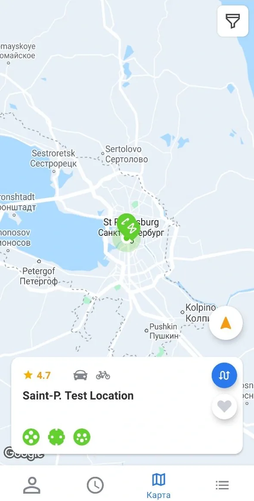
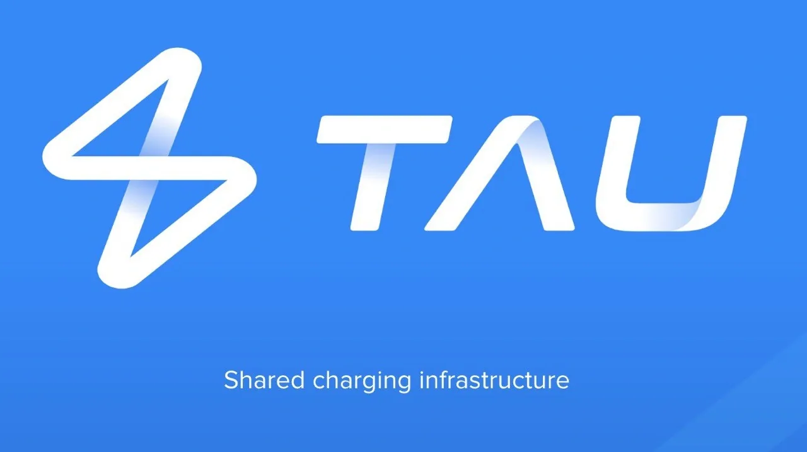

Explain state and the next action
The Android app had to remain timely and useful without pretending it owned connector or order truth.
A complete Android client for station discovery, connector reservations, queues, payment-method enrolment and a guided physical charging lifecycle.

A connector can be busy, a reservation can expire, another driver can be ahead, and the station decides when charging actually starts.
The Android app had to remain timely and useful without pretending it owned connector or order truth.
Queue position, order transitions, plug detection and charging status remain server-controlled.
The scope extends from discovery and profile management through payments, charging completion and production monitoring.
The backend stays authoritative while the client combines polling, subscriptions and local timers for responsive foreground behaviour.
Queue turns and terminal order states are refreshed against backend truth.
Order-status transitions arrive through a WebSocket-backed subscription.
Reservation and charging timers update locally between authoritative server events.
Charging is not one optimistic request. Each stage can expire, reject, disconnect or require recovery.
Application restarts must not erase a physical session already known by the backend.
Timers keep UI responsive, while server state decides transitions.
Station and EVSE identifiers, plug instructions and progress reduce ambiguity at the charger.
Card fields were encrypted client-side using BlueSnap’s integration before submission to the backend.
The final backend authorisation, capture, settlement, and refund rules are not claimed because the Android evidence does not establish them.
Approved screenshots were cleaned only for debug/private presentation noise; no product behaviour was invented.


The Android client covered station discovery, reservations, queues, payment-method enrolment, charging progress, completion, and recovery paths.
Android application from first implementation through the final product iteration.
Maps, queues, mixed synchronisation, payments and physical-state failure handling.
Backend state and other platforms remained collaborator-owned.
Target role · Staff Mobile Engineer (Android + Flutter)
Worldwide remote · English / Russian
Novi Sad, Serbia · hybrid possible